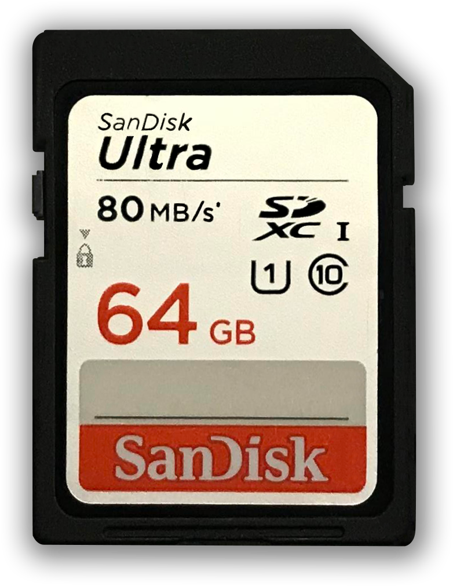

The Tech Perspective
Welcome to the secret history of small gadgets in technology
It's no secret that technological gadgets plays a huge part in making our daily lives run smoothly and efficiently. What's interesting is not what we know our gadgets can do, but how they came to be useful in ways we don't even realise.
Scroll down to delve into a world of the fascinating journey that some of the most useful products have undergone in order to become as effective and convenient as they are today.
The cellphone was exclusively used by top officialsin WWII in order to communicate secret information to one another as quickly as possible. The idea was that if civillians got their hands on these devices, important information could be compromised, hence why mobile phones didn't become available to the public until 1973. Today cellphone activity can be entirely untraceable, posing as an entirely new issue in terms of transferring dangerous information and facilitating organised crime

Most of the modern devices we use today have some form of USB port in their external design. Before the USB came about, wired connection to other computers was necessary in order to transfer information from one device to the other. What you don't know is that USBs were initially designed to be digital keys, which were going to take over the old lock-and-key system. However, when it's storage properties were discovered, it was decided that a more effective use of these devices would be to make data portable.
Another form of information storage, this takes on an even smaller size compared to the USB. The way in which the SD card differs is that it was intially designed to be an internal digital storage of human memories. By inserting a small chip under the surface of the skin, the idea was it will register all memories formed and act as a life-long memory capsule.
The Go Pro was brought to life by Nick Woodman who was inspired by a surfing trip in 2002. The issue was that camera technology at the time wasn't good enough to capture the professional angles that was desired. The very design used 35 mm film, then later venturing into the digital area. As of 2014, the design consisted of a fixed-lens, high definition camera with a 170-degree lens, and features such as: video stabilisation, improved timelapse video capabilities and live streaming.
The smart watch was an attempt to bring about wearable technology, popularised massively by Apple Inc. The initial design of the smart watch very much resembled that of a digital watch, with a memory capcity of only 112 digits, and has made massive leaps in progress since. In 2014, Apple launched their first ever Apple Watch, which takes on a very modern design, enabling individuals to have seamless interconnectivity between all their digital devices.
The smart watch was an attempt to bring about wearable technology, popularised massively by Apple Inc. The initial design of the smart watch very much resembled that of a digital watch, with a memory capcity of only 112 digits, and has made massive leaps in progress since. In 2014, Apple launched their first ever Apple Watch, which takes on a very modern design, enabling individuals to have seamless interconnectivity between all their digital devices.
Battery-life has evolved throughout time due to the increasing demand for long-lasting power for our portable gadgets. Beginning witha few double-A batteries and a simple control circuit, the power bank has developed into a more complex design with multiple functions. The power bank's main purpose was to replace the outdated cellphone deign where people would have to carry replacement batteries in case their cellphones would run out of power.
The existence of wireless speakers can be dated back to 1994, where the simplest technology used radio frequencies to transmit the signal from the device to the speaker. However, issues surrounding the use of radio frequencies needed to be resolved, hence the use of digital signals which coincided with the developing field of Bluetooth technology. Nowadays, with the widespread use of Bluetooth, wireless music systems have taken advantage of this perfect combination.
Zineb is an exchange student studying IT at Monash University, and has produced all products and photographs showcased on this site.
Get in touch at:
 zineb.leghnider@techperspecive.com.au
zineb.leghnider@techperspecive.com.au  +61 (0) 777 777 777
+61 (0) 777 777 777 subscribe to get updates on our next adventure into secret histories.